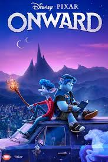
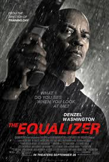

Outside of my college course, I try to mantain several other hobbies and interest. I also try and keep up my social activities
with going out with friends.
My Interests
Throughout the course of the lockdown I have been watching films with friends online while
The cinemas are closed using netflix party.
There are also a few good films I have watched recently
Which I have linked below with reviews

| Film | Review | Image |
|---|---|---|
| Alita: Battle Angle | Review |

|
| Coco | Review | |
| Onward | Review |  |
| The Equalizer | Review |  |
My interest in history started when I was studying history in school which I did in school.
I have also started watching history videos on youtube as well as playing some
games set in historic.
Apart from general history, I have also been reading books on both Greek and Norse mythology.
Below I have linked both the types of history videos I watch on youtube as well as the books
I am currently reading

Volounteering
Order of Malta Ambulance Corps
Since last year I have been volounteering with my local Order of Malta group.
At the moment we are just covering horse racing but we also cover various sporting events
and other activities.
I have currently received training up to a level of FAR (First Aid Responder)
But I am looking to train further once restrictions are lifted and we are allowed
To have meetings again.